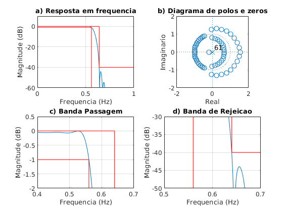
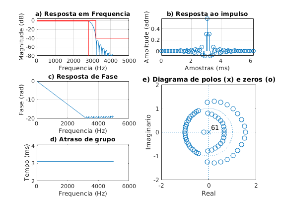

Contents
% Projeto filtro 1 % LP - (fa = 10000 Hz, f1 = 2800 Hz; f2 = 3200 Hz, Ap = 1 dB, As = 40 dB, GdB = 0 dB) close all; clear all; clc; ExecutarAjuste = 1;
Especificacoes
fa = 10000; fp = 2800; fs = 3200;
Ap = 1; As = 40; GdB = 0;
wp = fp/fa*(2*pi); ws = fs/fa*(2*pi);
wc1 = sqrt(wp*ws); % media geometrica
Dw1 = ws - wp;
M1 = ceil(3.11*pi/(Dw1));
G0 = GdB;
Projeto inicial
M = M1; Dw = Dw1; wc = wc1; if ExecutarAjuste % primeiro ajuste G0 = 0.056; % db % segundo ajuste M (n/2) wp2 = 0.5741*pi; ws2 = 0.6375*pi; Dw2 = ws2 - wp2; M2 = ceil(M1*Dw2/Dw1); % nova ordem do filtro 2*M2 M = M2; % ajuste deslocamento wc2 = wc1 - ((0.0075+0.0077)/2)*pi; wc = wc2; end k = 1:M; % Low Pass bi = sin(wc*k)./(pi*k); b0 = wc/pi; b = [flip(bi) b0 bi]; m = -M:M; % wk = 0.5 + 0.5*cos(2*pi*m/(2*M+1)); % Hann wk = hann(2*M+1)'; % wk = barthannwin(2*M+1)'; % wk = bartlett(2*M+1)'; % wk = triang(2*M+1)'; % wk = hamming(2*M+1)'; b = b.*wk*10^(-G0/20); % regular altura do filtro em db
figure(1) subplot(221) [h, w] = freqz(b, 1, linspace(0,pi,100000)); % plot(w/pi, abs(h)); grid on; plot(w/pi, 20*log10(abs(h))); grid on; title('a) Resposta em frequencia') ylim([-60 10]) hold on; plot([0,wp,wp]/pi,[-Ap,-Ap,-80], '-red') plot([0,ws/pi,ws/pi,1],[0,0,-As,-As], '-red') xlabel('Frequencia (Hz)'); ylabel('Magnitude (dB)'); subplot(222) zplane(b, 1); axis([-2 2 -2 2]); title('b) Diagrama de polos e zeros') xlabel('Real'); ylabel('Imaginario'); subplot(223) plot(w/pi, 20*log10(abs(h))); title('c) Banda Passagem') grid on; hold on; plot([0,wp,wp]/pi,[-Ap,-Ap,-80], '-red') plot([0,ws/pi,ws/pi,1],[0,0,-As,-As], '-red') xlim([0.4 0.7]); ylim([-2 0.5]); xlabel('Frequencia (Hz)'); ylabel('Magnitude (dB)'); subplot(224) plot(w/pi, 20*log10(abs(h))); title('d) Banda de Rejeicao') grid on; hold on; plot([0,wp,wp]/pi,[-Ap,-Ap,-80], '-red') plot([0,ws/pi,ws/pi,1],[0,0,-As,-As], '-red') xlim([0.5 0.7]); ylim([-50 -30]); xlabel('Frequencia (Hz)'); ylabel('Magnitude (dB)');
figure(2) %suptitle(['LP FIR ' num2str(fp) '-' num2str(fs) ' Ordem: ' num2str(2*M+1)]) escala = fa/2; subplot(3,2,[4 6]) zplane(b, 1); axis([-2 2 -2 2]) title('e) Diagrama de polos (x) e zeros (o)') xlabel('Real'); ylabel('Imaginario'); clear h w [h, w] = freqz(b, 1, 'whole'); subplot(322) x_imp = [0:length(b)-1]/fa*1000; stem(x_imp, b); grid on; title('b) Resposta ao impulso') xlabel('Amostras (ms)'); ylabel('Amplitude (adm)'); subplot(321) [h, w] = freqz(b, 1, linspace(0,pi,10000)); % plot(w/pi, abs(h)); grid on; plot(w/pi*escala, 20*log10(abs(h))); grid on; hold on; title('a) Resposta em Frequencia') ylim([-80 5]) Amin = 80; % plot([0 wp wp]/pi, -[Ap Ap Amin], 'r'); plot([0,fs,fs,fa/2],[0,0,-As,-As], 'r') plot([0,fp,fp,],[-Ap,-Ap,-80], 'r') xlim([0 fa/2]) xlabel('Frequencia (Hz)'); ylabel('Magnitude (dB)'); subplot(323) plot(w/pi*escala, unwrap(angle(h))/pi); grid on; title('c) Resposta de Fase') xlabel('Frequencia (Hz)'); ylabel('Fase (rad)'); subplot(325) [del_y, del_x] = grpdelay(b, 1); plot(del_x/pi*fa/2, del_y/fa*1000); title('d) Atraso de grupo') xlabel('Frequencia (Hz)'); ylabel('Tempo (ms)'); % %% Simulacao com PM % % Specs: % % fcuts = [fp fs]; % w = fcuts/fa*(2*pi); % wp = w(1)/pi; ws = w(2)/pi; % % mags = [1 0]; % % devs = [1-10^(-Ap/20) 10^(-As/20)]; % devs = [1-10^(-(Ap/2-0.06)/20) 10^(-As/20)]; % G0 = -Ap/2; % % % calculo da ordem com firpmord % [n,f0,a0,w0] = firpmord(fcuts,mags,devs,fa); % % % calculo algoritmo PM % h_pm = firpm(n,f0,a0,w0); % h_pm = h_pm*10^(G0/20); % % [Hw,w] = freqz(h_pm, 1, 10000); % plot(w*fa/2/pi,20*log10(abs(Hw))) % title_txt = ['PM Filter N = ' num2str(n)]; % title(title_txt) % hold on % Amin = 80; % % ylim([-Amin 10]) % plot([0,wp,wp]*fa/2,[-Ap,-Ap,-80], '-red') % plot([0,ws,ws,1]*fa/2,[0,0,-As,-As], '-red') % %